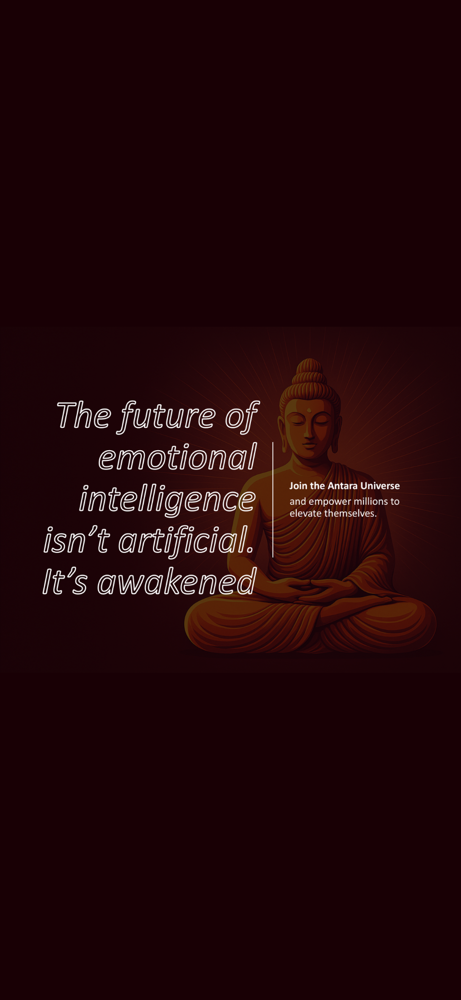
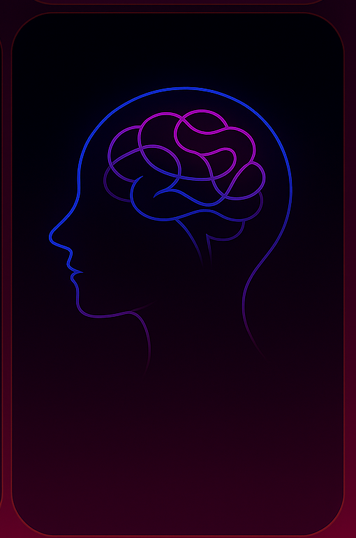
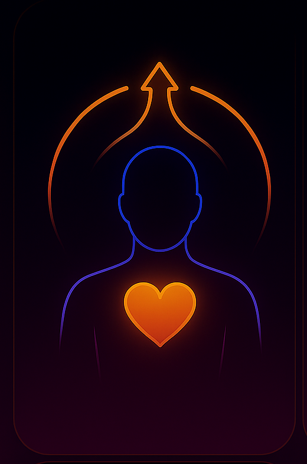
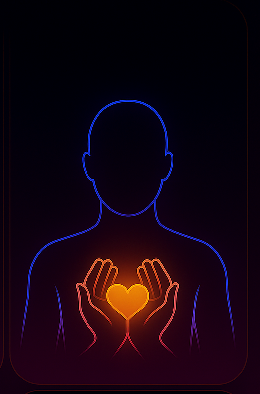

Antara is designed to be privacy-first. We avoid collecting what we do not need, we keep analytics opt-in, and we aim for the least invasive path that still works.
The interface stays calm on purpose. Your brain already has enough tabs open.

Reflection works at the level of metacognition. The capacity to notice thoughts, emotions, and patterns. It recruits prefrontal networks that support perspective, inhibition, and narrative coherence. When people reflect, mental noise starts to organise. Experiences that felt overwhelming become nameable and therefore manageable. This restores a sense of orientation and psychological distance.

Elevation works with meaning-making, values, and agency. It helps people identify direction and reconnect with purpose. This is where motivation, hope, and future-oriented thinking live. It draws on cognitive appraisal, goal systems, and self-efficacy. Once the mind is clearer, people can choose how they want to relate to their experience. They regain authorship. This supports resilience, motivation, and behavioural change without forcing positivity.

Healing focuses on bottom-up regulation. It works with the body. Many emotional patterns are stored as physiological responses rather than conscious memory. This path is trauma-aware. It prioritises safety, pacing, and nervous system regulation. By settling the body, emotional charge can release without re-exposure or overwhelm. This reduces chronic stress patterns and restores a sense of internal safety.
Antara is an agentic AI, neuroadaptive emotional-wellbeing companion grounded in neuroscience, neuropsychology, and psychosomatic healing, built to help people regulate their nervous system. Antara detects signals the human eye often misses, including facial micro-expressions, posture, voice cues (pace, tone, calmness), patterns in word choice, and the emotional subtext people struggle to name, including stress responses shaped by past.
It does not manage symptoms. It helps regulate the nervous system, make sense of emotional signals, and reconnect mind and body
It doesn’t just tell you what to do. It explains why something helps (and why it sometimes doesn’t), using clear conversation, real-time behavioural and neruo-state signals, and a carefully designed agentic AI engine that keeps you honest without turning everything into drama delivering real therapeutic workflows.
Available on iOS and Android. Same calm, same science, same privacy-first intent.